Stephen Su
Project Overview
In this project, we produce a morph animation of my face into someone else's face, compute the mean face of a population, and extrapolate from the population to create a caricature of myself. This project requires us to delve deeper into image manipulation through the use of warping and cross-dissolving images, as well as image transformation through triangulation.
Part 1: Defining Correspondences
We start off by choosing two images to create a morph animation. For the two images, I chose a passport-like photo of me taken by my friend Justin Wu earlier this year, and I want to be able to morph into the famous basketball player Yao Ming. Below are the two photos that I will be using for the rest of the project. To makes things simplier, I cropped both photos to have a 700 pixel by 700 pixel resolution, and removed the background of both photos.
|
Me |

Yao Ming, Houston Rockets |
Next, I used this tool to define correspondence points for each image. Correspondence points highlight key features of the face, such as the eyes, nose, mouth, chin, ears, and other distinct features. These points are then used to create a triangulation for each image that will be used for morphing. Here, I used a Delauney triangulation for both photos.
|
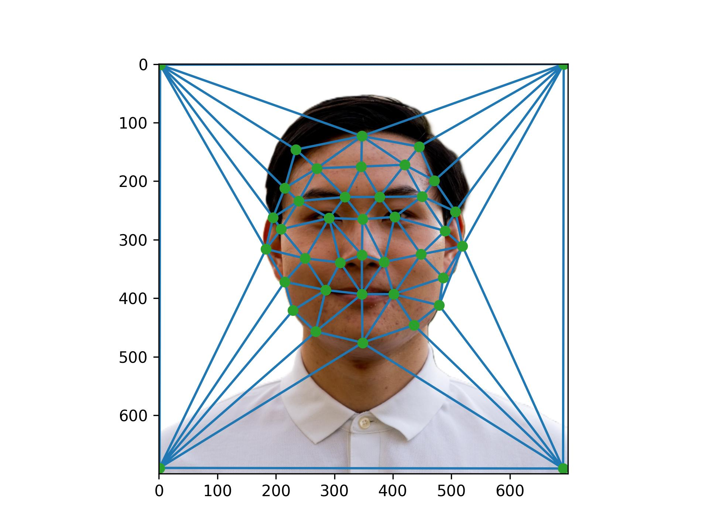
My Triangulation |
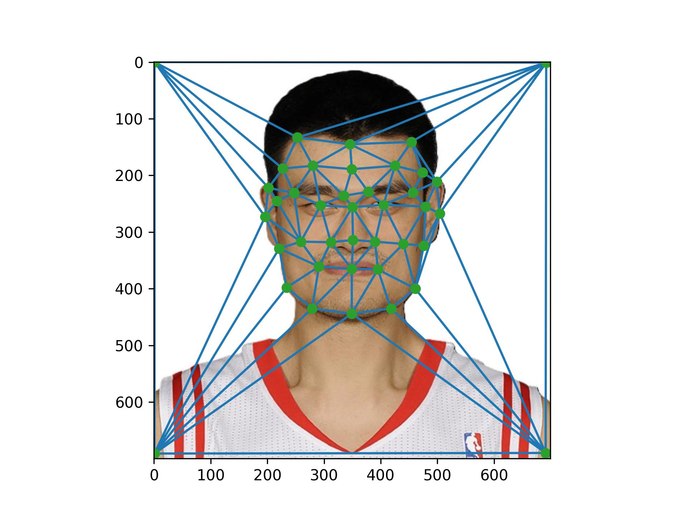
Yao Ming Triangulation |
Part 2: Computing the "Mid-Way Face"
Before computing the morph sequence, I need to compute the mid-way face between both photos. This involves computing the average shape of both faces, warping both faces into the shape, and averaging the colors together. To compute the average shape, I averaged each of the keypoint locations in the two photos, and then created a triangulation on top of the averaged points. Below is an image of the average face.
|
Me |
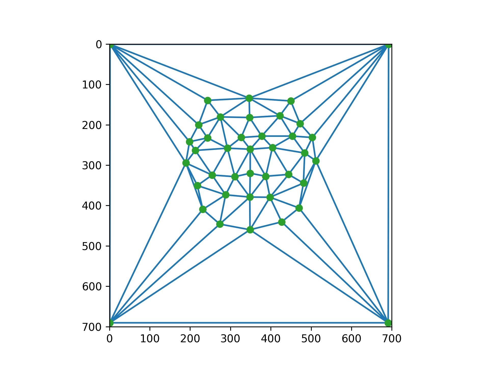
Mid-way Shape |
Yao Ming |
|
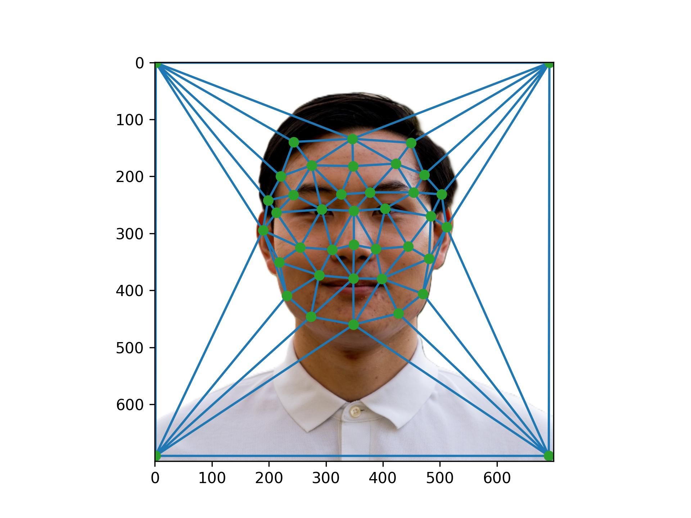
Mid-way Shape on me |
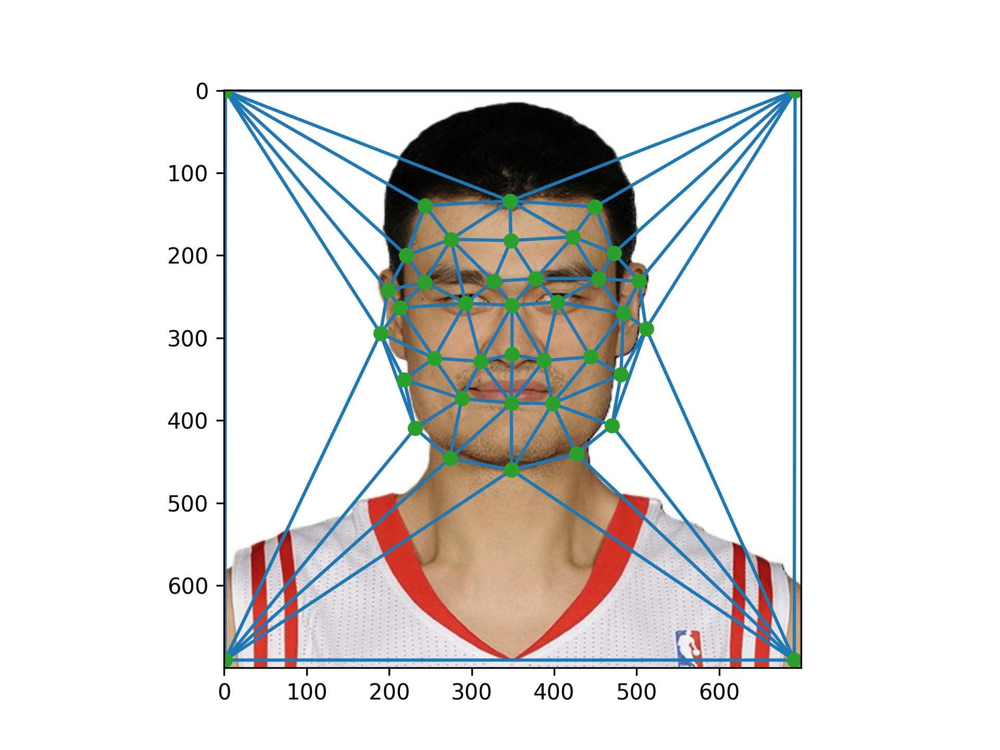
Mid-way Shape on Yao Ming |
To warp a face into the average shape, I warped each triangle in the in the original shape to the corresponding triangle in the Mid-way shape, using an affine transformation matrix that transforms the each point in the original triangle to each point in the target triangle. In order to bulk apply this operation in all points within a triangle, I used skimage's polygon function to generate a triangular mask of all points. Then, I used an inverse warp in the on the target triangle to find what each pixel value should be. Inverse warping is the idea of finding a target pixel's value from pixels in the original image. A pixel in our target may map to a spot in between pixels in our original image. In that case, we use nearest neighbor to sample the color. Below are images of my face warped onto the average shape, as well as Yao Ming's face warped into the average shape.
|
My face warped to average geometry |
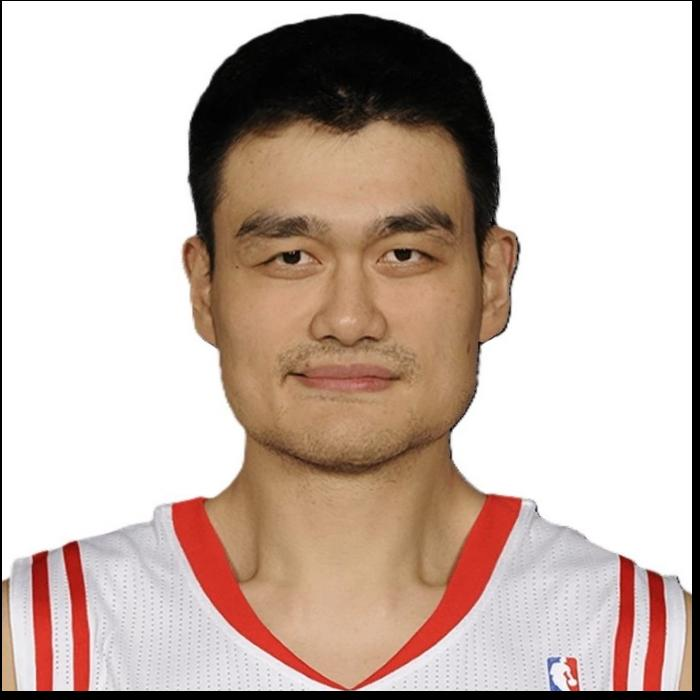
Yao Ming's face warped to average geometry |
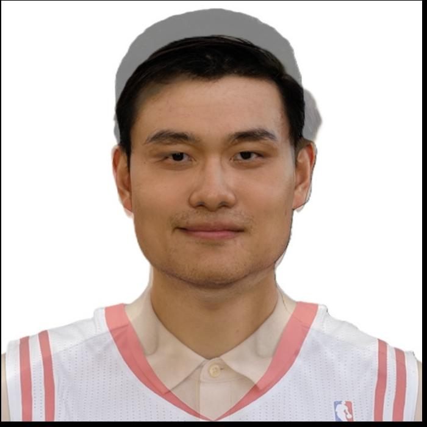
Mid-way face of me and Yao Ming |
Part 3: The Morph sequence
Here, I wrote a function to produce a .GIF file that morphs my face into Yao Ming's face in 45 frames. The ideas here build heavily from Part 2. In Part 2, we used an average between the two shapes and faces. However, to produce a morph, we need to leverage a weighted average between the two shapes and faces. Here's what the morph looks like.

I morphed into Yao Ming |
Part 4: The "Mean Face" of a Population
In this part, I worked with a dataset of annotated faces. More specifically, I used the Danes dataset, which already provides annotations for different faces. The goal here is to produce the average face shape of the whole population, morph each face into the average shape using the technqiues from the previous parts, and then compute the average face. Below is an image of what the average face shape is.
|
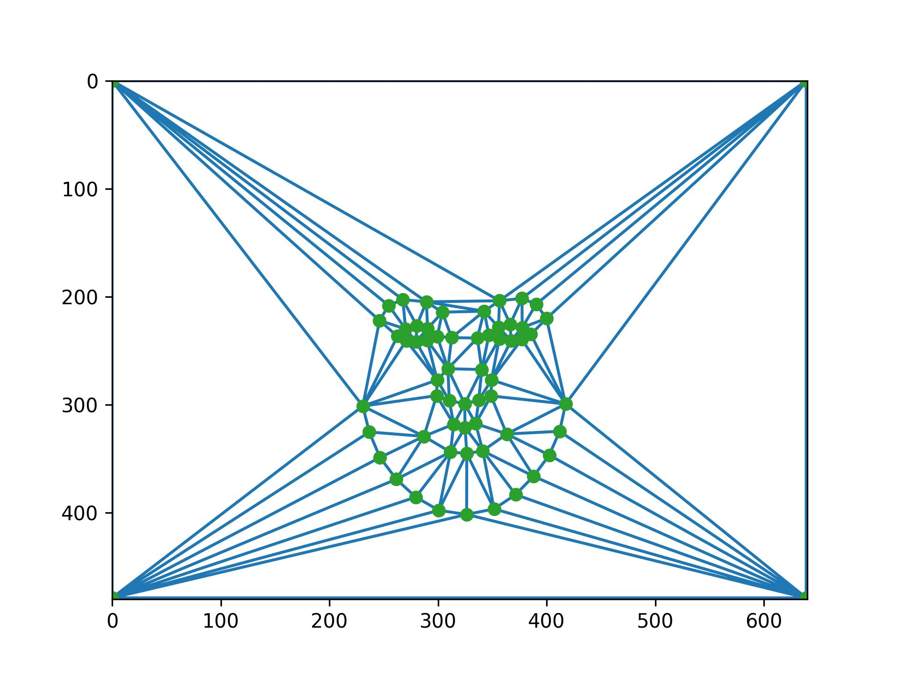
Average face shape of population |
I morphed some of the faces in the dataset to the average shape. Here are some examples for comparison.

Male 1 |
Male 1 Warped |

Male 2 |
Male 2 Warped |
|
Male 3 |
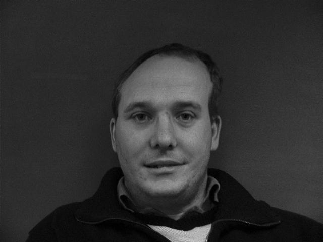
Male 3 Warped |

Male 4 |
Male 4 Warped |

Female 1 |
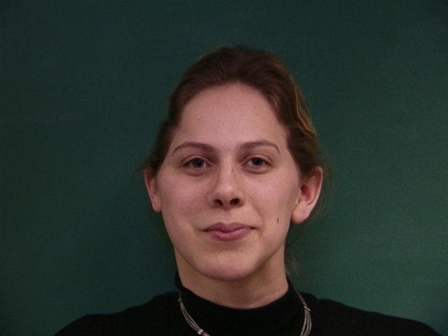
Female 1 Warped |

Female 2 |
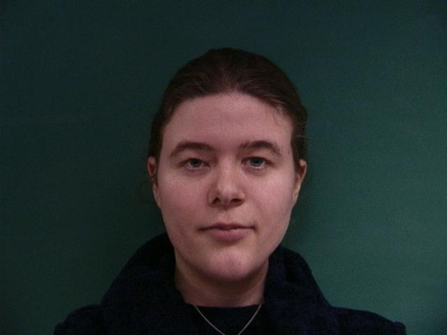
Female 2 Warped |

Female 3 |
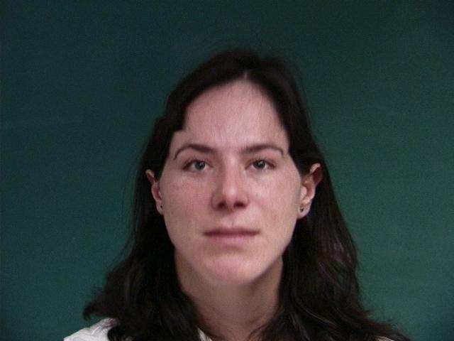
Female 3 Warped |

Female 4 |
Female 4 Warped |
Lastly, I computed the average face of the entire population, and proceeded to warp my face into the average face, and vice versa as well. Here are the results.
|
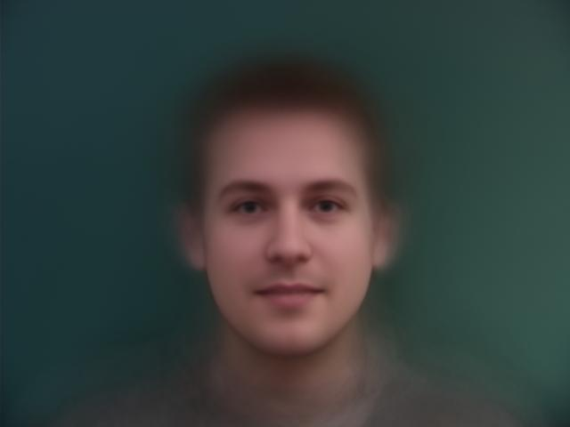
Average Face |
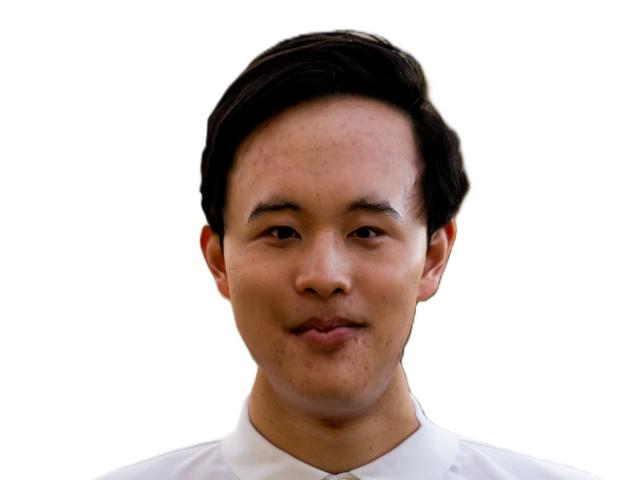
My face warped into average face |
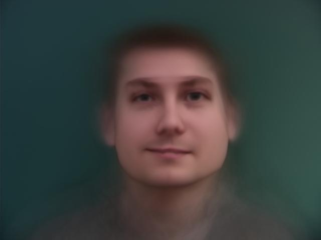
Average face warped into my face |
The main feature that stands out here from my face to the average face is the face shape. My face is generally more square, where as the average face tends to be more rounded. When the average face warps into my face, the face takes up more of a square shape, where as when my face is warped into the average face, my face takes more of an oval shape.
Part 5: Caricatures: Extrapolating from the mean
In this part, I produced a caticature of my face by extrapolating from the mean face from the previous step. Firstly, to make the caticature more accurate, I calculated the mean for just male faces instead of the entire population. The average male face looks as follows.
|
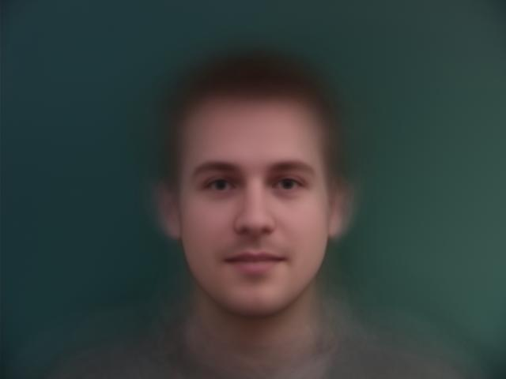
Average male face |
Next, to make the caricature, I subtracted the mean face from my face to find the difference. Then, I added the difference to my face. To make things more interesting, I scaled the difference by different amounts to see how my face would change.
|
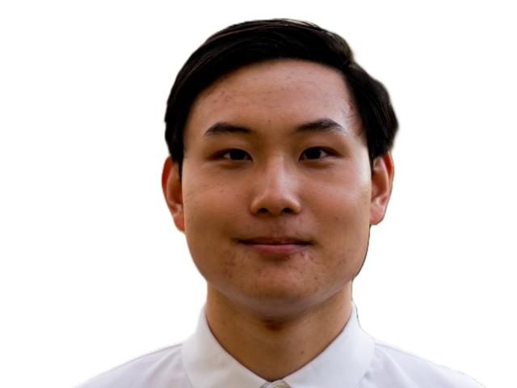
alpha = 0.1 |
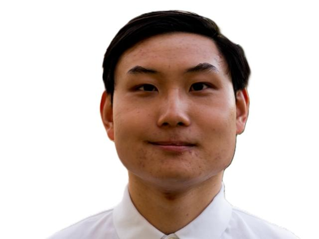
alpha = 0.5 |

alpha = 0.75 |
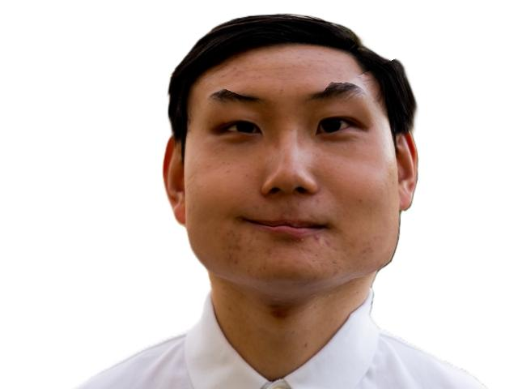
alpha = 1 |
A general trend here is that as alpha increases, my eyebrows get raised higher, which makes sense since the data set contains faces with eyebrows larger than my eyebrows.
Bells and Whistles
For this section, I looked into changing the gender of how my face looked. I first started off by calculating the female average face from the Danes dataset.
|
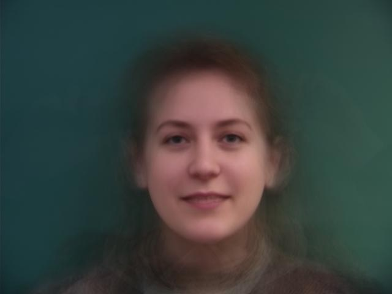
Average female face |
Then, I warped my face into the average female face hoping to bring out more female facial features into my face. I started off by warping just the shape, using a weighted average of my face's shape and the the average female face shape. Here, alpha is the weight of the female face.
|
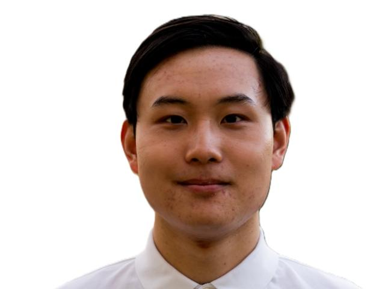
alpha = 0.1 |
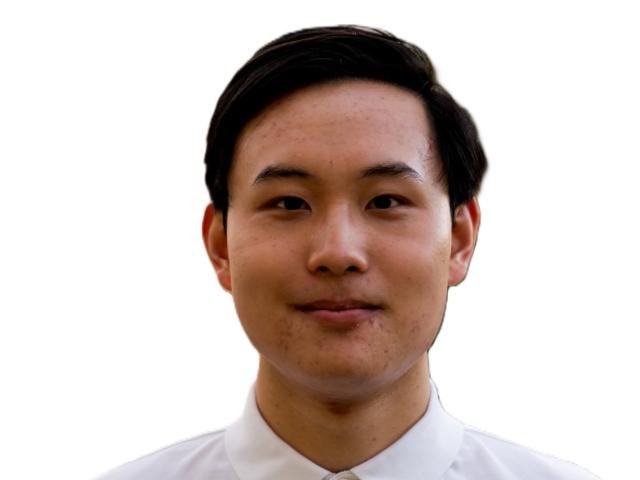
alpha = 0.25 |
|
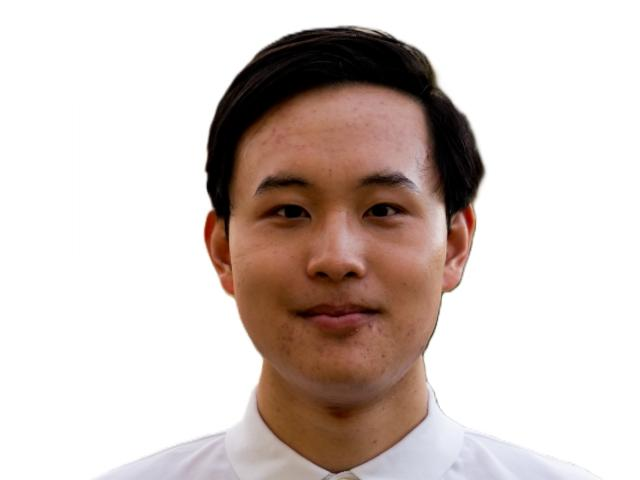
alpha = 0.5 |
alpha = 0.75 |
Next, I warped just the appearance of the face, again using a weighted average, without warping the shape.
|
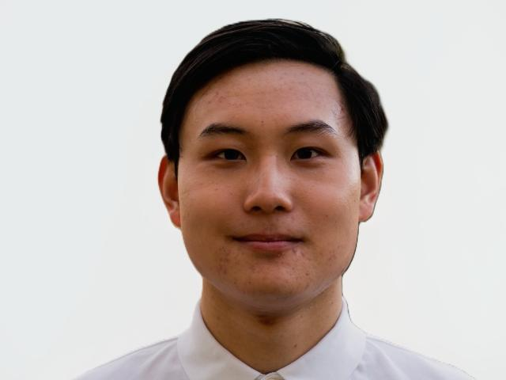
alpha = 0.1 |
alpha = 0.25 |
|
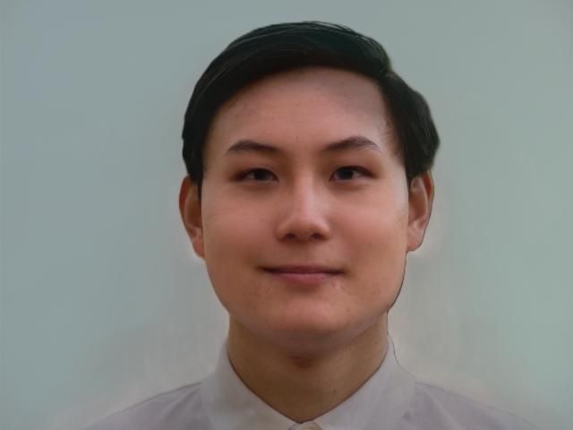
alpha = 0.5 |
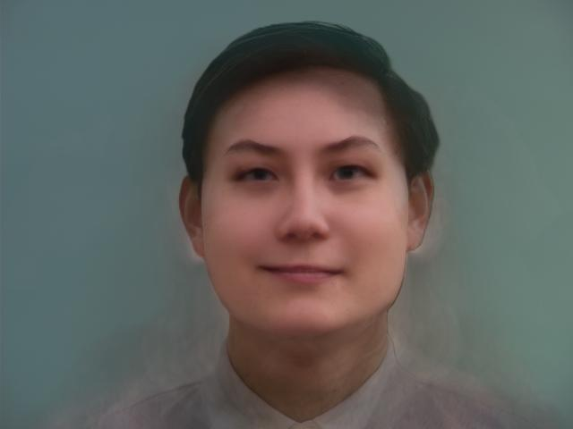
alpha = 0.75 |
Lastly, I warped both the shape and the appearance using the same alpha.
|
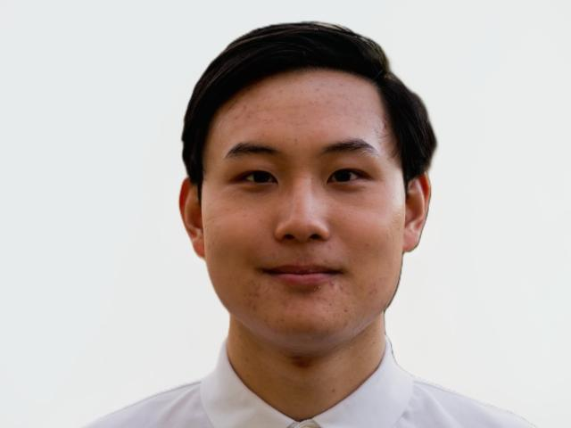
alpha = 0.1 |
alpha = 0.25 |
|
alpha = 0.5 |

alpha = 0.75 |
As alpha increased, my face became more feminine. Moreover, I noticed that my skin became more refined, and there is overall less acne on my face. My eyes became more feminine, and my face shape is also more oval-like. Overall, the process went well.